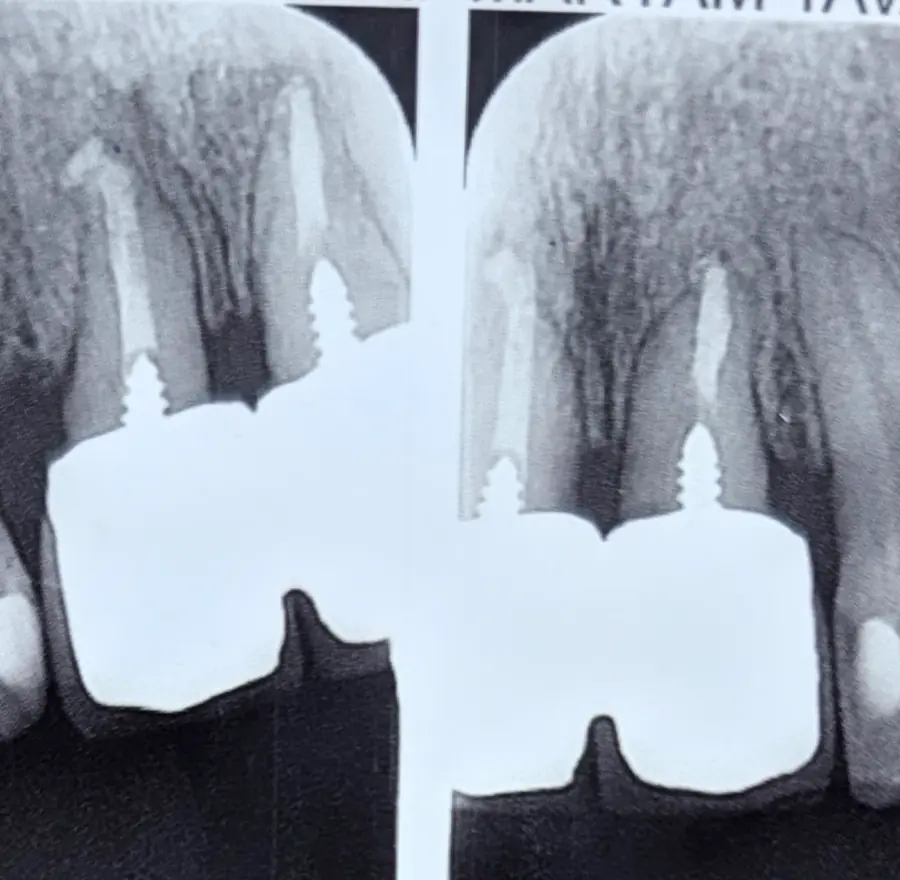
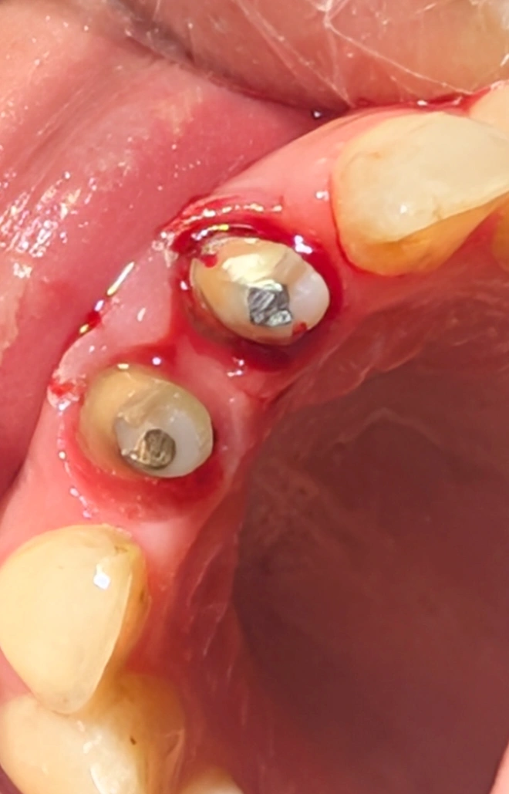

نسخه استخراجشده؛ ترجمه یا تأیید علمی انجام نشده است. وضعیت: captured
بیمار با دو روکش بسیار بلند در ناحیهی دندانهای قدامی آمده است که از نظر نسبتهای زیبایی، ظاهری ناخوشایند و غیرطبیعی دارند. دندانها قبلاً جراحی افزایش طول تاج شدهاند و بیمار همچنان از فرم، حجم پالاتال و ظاهر روکشها شدیداً ناراضی است.

چالش اصلی این کیس، کوتاهی شدید ریشهی هر دو دندان است که آنها را در مرز کشیده شدن قرار داده است.
اول با رویکردی محافظهکارانه و بدون تعویض روکشها، حجم بیش از حد سینگولوم در سطح پالاتال اصلاح و کم شد تا آزردگی بیمار کاهش یابد. به بیمار توضیح داده شد که به دلیل کوتاهی شدید ریشهها، ریسک از دست رفتن این دندانها در حین هرگونه مداخله بسیار بالاست. با این حال، بیمار چون فرم روکشهای قبلی را تحمل نمیکرد، خواستار تعویض آنها شد و ریسکهای درمان را پذیرفت.
پس از بریدن روکشهای قبلی معلوم شد تراش پالاتال بسیار نامناسب و غیراصولی انجام شده و علت اصلی عدم تحمل بیمار همین حجم و کانتور غلط بوده است. اصلاح تراش (Re-prep) با کانتور اصولی پالاتال و رعایت ملاحظات ساختاری انجام شد.
کانتور و حجم غلط در سطح پالاتال روکش قدامی میتواند باعث ناراحتی، اختلال در فونتیک و عدم تحمل روکش شود؛ اصلاح تراش با کانتور اصولی پالاتال این مشکل را برطرف میکند.

ریشهها آنقدر کوتاه بودند که هر دندان بهتنهایی توانایی کافی برای تحمل نیروهای فانکشنال در درازمدت را نداشت. استراتژی بایومکانیک، اتصال روکشها به یکدیگر (Splinting) بود تا به هم کمک کنند: نیرو بین دو دندان تقسیم شود و طول عمر دندانها و پروتز افزایش یابد.
این تصمیم به این دلیل گرفته شد که هر دو دندان از نظر میزان تحلیل ریشه و قدرت در یک سطح بودند.
یک پروتز موقت متصلبههم (Splinted Temporary) تحویل بیمار شد و دندانها ۲ الی ۳ هفته زیر مانیتورینگ ماندند تا این موارد بررسی شود:
پس از تأیید نهایی این فاز، دو روکش دائم متصلبههم ساخته و تحویل میشود.
شرط حیاتی: گاهی برای بهبود شرایط بایومکانیک مجبوریم روکشها را به هم اسپلینت کنیم؛ اما دندانهای پایه باید از نظر قدرت، توانایی و وضعیت ریشه، متناسب و در یک سطح با یکدیگر باشند. در غیر این صورت، اتصال دو دندان با ظرفیت متفاوت میتواند توزیع نیرو را نامتوازن کند و به دندان ضعیفتر آسیب برساند.